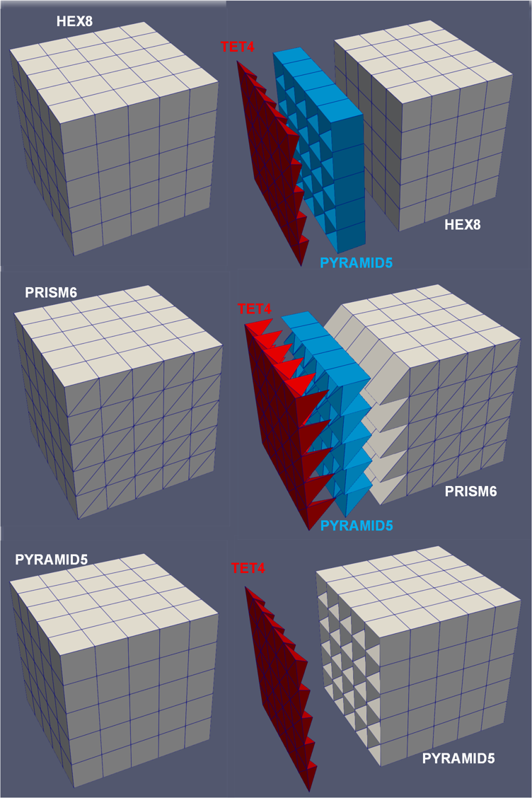

- boundary_namesBoundaries that need to be converted to form a transition layer.
C++ Type:std::vector<BoundaryName>
Controllable:No
Description:Boundaries that need to be converted to form a transition layer.
BoundaryElementConversionGenerator
Convert the elements involved in a set of external boundaries to ensure that the boundary set only contains TRI3 elements
Overview
The BoundaryElementConversionGenerator converts the elements of a linear mesh ("input") that are involved in a set of given boundaries ("boundary_names") in a mesh to ensure that the side elements on these boundaries are all TRI3 (instead of QUAD4). This operation helps the boundaries of interest to be compatible with the 3D mesh generated by the tetrahedronization (e.g., XYZDelaunayGenerator). The conversion strategy is described briefly in the following subsections.
Conversion Strategy
commentnote
This mesh generator support all linear 3D elements except C0POLYHEDRON.
There are four types of linear 3D elements supported by this mesh generator: HEX8, PRISM6, PYRAMID5, and TET4. The TET4 elements do not need to be converted since all of their sides are already TRI3. The conversion process focuses on the other element types. The basic idea is to convert the element side(s) that are part of the given boundaries while keeping the other element side(s) unchanged. Also, common mesh information, such as subdomain ids, element extra integers, and boundary ids, are preserved during the conversion.

Figure 1: Generation of the boundary layer based on the left boundary of cube mesh consisting different linear 3D elements: (left column) original mesh; (right column) mesh after the conversion.
The most common application of this mesh generator is applied to external boundaries of the "input" mesh. The mesh generator can also be applied to internal boundaries, in which case both sides of the internal boundary are converted. Users can enable "external_boundaries_checking" to enforce that the specified boundaries are external to avert unintended behavior.
commentnote
In distributed mesh mode, the mesh is temporarily serialized to enable some essential methods.
HEX8
All the six sides of a HEX8 elements are QUAD4. Any sides involved in the given boundaries will need to be divided into two TRI3 sides that belong to two different new elements. To keep the other QUAD4 sides unchanged, a simple strategy is adopted. First, the HEX8 elements are divided into six PYRAMID5 elements, each of which is defined by one of the QUAD4 sides and the centroid of the HEX8 element. For those QUAD4 sides involved in the given boundaries, the PYRAMID5 elements are further divided into two TET4 elements (see the top row of Figure 1 as an example).
PRISM6
A PRISM6 element has three QUAD4 sides and two TRI3 sides. No conversion is needed if the given boundaries only involve the TRI3 sides. If one or more QUAD4 sides are involved, similar to the HEX8 case, the element can be divided into two TET4 elements and three PYRAMID5 elements based on the sides and the centroid of the PRISM6 element. The PYRAMID5 elements are then divided into two TET4 elements for those QUAD4 sides involved in the given boundaries (see the middle row of Figure 1 as an example).
PYRAMID5
A PYRAMID5 element has only one QUAD4 side. If that side is involved in the given boundaries, it is divided into two TET4 elements straightforwardly (see the bottom row of Figure 1 as an example).
Consistent Splitting of QUAD4 Faces
For each QUAD4 face, there are two ways to split it into two TRI3 faces, which correspond to the two diagonal lines of the QUAD4 face. In this generator, the diagonal line that involves the node with the lowest global node ID among the four nodes of the QUAD4 face is selected. This ensures that the splitting of the QUAD4 faces is consistent across all elements in the mesh, which make the transition layer consistent with the element conversion process described in ElementsToTetrahedronsConverter.
Thicker Transition Layer Option
The transition layer generated by this mesh generator can optionally be made thicker than converting only one layer of original non-TET4 elements. This can be achieved by setting the parameter ("conversion_element_layer_number"). For a thicker transition layer, only the layer of the original non-TET4 elements that are adjacent to the remaining elements are converted as described above. Meanwhile, the outer layer(s) of the original non-TET4 elements are converted to TET4 elements using the same algorithm as described in ElementsToTetrahedronsConverter.
Subdomain Names and IDs
As new types of elements are introduced in the transition layer, only the subdomain ids and names of the input mesh that are associated with the retained elements are preserved in the output mesh. The new TET4 and PYRAMID5 elements in the transition layer are assigned new subdomain names that are based on the original subdomain names with a suffix defined by "converted_pyramid_element_subdomain_name_suffix" and "converted_tet_element_subdomain_name_suffix", respectively. The new subdomain ids are assigned by automatically shifting the original ids.
Input Parameters
- conversion_element_layer_number1The number of layers of elements to be converted. The farthest layer of the elements from the given boundary are converted to elements compatible with the remainder of the mesh, while the other layers of elements are converted into TET4.
Default:1
C++ Type:unsigned int
Controllable:No
Description:The number of layers of elements to be converted. The farthest layer of the elements from the given boundary are converted to elements compatible with the remainder of the mesh, while the other layers of elements are converted into TET4.
- converted_pyramid_element_subdomain_name_suffixto_pyramidThe suffix to be added to the original subdomain name for the subdomains containing the elements converted to PYRAMID5.
Default:to_pyramid
C++ Type:SubdomainName
Controllable:No
Description:The suffix to be added to the original subdomain name for the subdomains containing the elements converted to PYRAMID5.
- converted_tet_element_subdomain_name_suffixto_tetThe suffix to be added to the original subdomain name for the subdomains containing the elements converted to TET4.
Default:to_tet
C++ Type:SubdomainName
Controllable:No
Description:The suffix to be added to the original subdomain name for the subdomains containing the elements converted to TET4.
- external_boundaries_checkingFalseWhether to check if provided boundaries are external.
Default:False
C++ Type:bool
Controllable:No
Description:Whether to check if provided boundaries are external.
- inputmesh generator creating the mesh on which to create the boundary transition layer on.
C++ Type:MeshGeneratorName
Controllable:No
Description:mesh generator creating the mesh on which to create the boundary transition layer on.
Optional Parameters
- enableTrueSet the enabled status of the MooseObject.
Default:True
C++ Type:bool
Controllable:No
Description:Set the enabled status of the MooseObject.
- save_with_nameKeep the mesh from this mesh generator in memory with the name specified
C++ Type:std::string
Controllable:No
Description:Keep the mesh from this mesh generator in memory with the name specified
Advanced Parameters
- nemesisFalseWhether or not to output the mesh file in the nemesisformat (only if output = true)
Default:False
C++ Type:bool
Controllable:No
Description:Whether or not to output the mesh file in the nemesisformat (only if output = true)
- outputFalseWhether or not to output the mesh file after generating the mesh
Default:False
C++ Type:bool
Controllable:No
Description:Whether or not to output the mesh file after generating the mesh
- show_infoFalseWhether or not to show mesh info after generating the mesh (bounding box, element types, sidesets, nodesets, subdomains, etc)
Default:False
C++ Type:bool
Controllable:No
Description:Whether or not to show mesh info after generating the mesh (bounding box, element types, sidesets, nodesets, subdomains, etc)